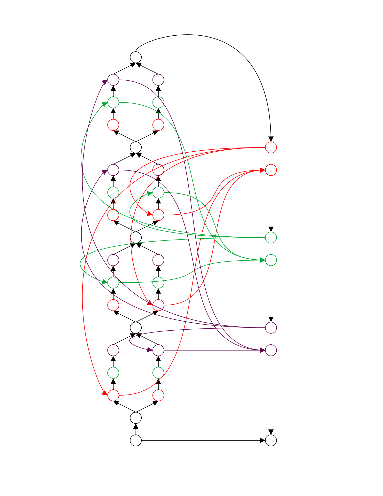

1 The detour problem
The statement given by Antoine Amarilli is rephrased here:
Given a directed graph , a source and a target reachable from , decide if there a simple directed path from to whose length (in terms of edge count) is greater than that of the shortest path from to . Does this problem have a polynomial time algorithm?
It is mentioned in this 2023 paper by four MIT scholars (look for "it remains open whether k-Longest Detour is in P even for the special case of k = 1!").
2 The PTIME solution
2.1 Definitions
Let be a directed graph and .
Define a bundle as the subgraph of containing exactly all shortest paths from to .
For a subgraph , define as the set of edges in with one end in and the other end in , and define as . For , define as the subgraph with vertexes and whose edge set is the union of , and .
For , define as the distance (possibly ) from to in . The subscript is omitted if .
For , define 122-augmented as the graph obtained following these steps:
- replace each with connected with an edge , and connect all inbound edges to and outbound edges from
- add a new sink and connect from and
The construction of 221-augmented is similar except we add a new source before the two sources (instead of a new sink after the two sinks).
2.2 The algorithm
If :
If :
Return True
Elif VDJ-122 and
VDJ-221:
Return True
Return False
where
Construct with new sink
Return MAX-FLOW
VDJ-221:
Construct with source
Return MAX-FLOW
which (along with the construction of the s) come from the answer in stackoverflow 9833516 by Keith Schwarz:
2.3 Proof sketch
It shouldn't be hard to see why the algorithm runs in polynomial time. For example, can be built using a forward bfs with depth and then a backward bfs. Also, if the algorithm reports true, then it has definitely found a simple detour (since part of it lies outside ).
If there is a simple detour, it must have at least one segment entirely outside except the start and finish . Then we have . If is further away from than , that is, the segment travels "backward", things get interesting. What if there is no way to go (inside ) from to without visiting , or from to without visiting ? In this case, the detour must have (outside ) skipped on its way from to , or be skipping on its way from to , so we have another shorter simple detour that doesn't give us this difficulty. WLOG, we only need to concern ourselves with detours that have a single segment outside without this difficulty, and the algorithm handles them properly.
3 Ending a long detour
Mar 13, while looking for a volunteer to beta test my svg latex solution, I came across Antoine Amarilli's big list of open problems in theoretical computer science.
Having previously spent five of the best years of my life trying to solve a well-known open problem (FTR, the ≠ 1) and come back empty-handed, I was cautious about trying a new one. After all, those five years could have been better spent on things like AI, crypto and/or distributed computing, where I probably would have enjoyed some success, both scholarly and financial.
Mark Twain once said: "Twenty years from now you will be more disappointed by the things you didn't do than the things you did." It hasn't been twenty years but I already feel the opposite about my choice 2. That's why the "Detour problem" caught my eyes as I glanced through the open problems: probably no name is more descriptive of what I am dealing with in real life!
As with the previous open problem, getting in was easy: all it took was a wrong solution 3 that made it look like a final solution was within reach. But getting out was hard.
Fortunately, things seem to have worked out this time, exactly when I need a proof that I am still fit for scholarly pursuits. Having done research on various things over the years, I always enjoyed the hermit style: research but never publish. (Though I had other reasons, I think Black and Scholes have one explanation why somebody might want to withhold their research from public view.) This time however, circumstances have changed, and the choice is between publish and perish, so let me RUSH to publish!
It goes without saying that the solution has not yet been peer-reviewed, so be careful if you decide to rely on it.
4 The detours in ending the detour
The process of ending the detour is not without its own detours. Here are a few:
4.1 The missing possibilities
The original "simple solution" I came up with quickly (thanks to some leetcode experience last year 4) without thinking about "simple" was something like:
For :
If :
Return True
Return False
Here is an attempt to fix it ( means the transpose of ):
For :
Calculate , and their transposes using
For , :
If VDJ-221:
Return True
Return False
A challenge for the reader is to figure out why this fix is insufficient.
Hint:
4.2 The "shortcut problem"
Take a look at this beautiful (but useless) graph and guess what I was trying to do:
5 I must be hallucinating, but…
… but I must still say something.
While doing my literature crunching for this detour problem, I came across The Direct Subgraph Homeomorphism Problem by Fortune, Hopcroft and Wyllie, written in 1978. I swear to Gauss I cannot identify a "shortcut problem" in Fig 1 and 4 used to prove lemma 3! That means when the reduction there from 3SAT to vertex disjoint path pair is combined with (a slightly modified version of) Schwarz's algorithm above, we get =! Yeah. I am talking about that well-known open problem!!!
So I must be hallucinating …
6 Conclusion
Let me continue the time-honored tradition of ending my post with an AGI joke. If you have gained nothing from everything above, hope you at least find the conclusion entertaining:
Z-Crop's stock has gone WILD, 500%, WOW, because its AGI named Gauss has successfully solved THREE Clay math problems in a MONTH, and convinced human mathematicians that its solutions are correct. UNBELIEVABLE! Tell us abit about what happened and how you are feeling.
Z-CORP CEO:
Well, human beings have come a long way in our mastery of nature. First we mastered fire, allowing us to eat safer more nutritious food and survive cold winters. Then we mastered force, allowing us to lift and move objects that are a hundred or thousand times our body weight. Then we mastered energy, allowing us to run faster than leopards and fly higher than birds, and to visit the moon and the Mars and explore other galaxies. Now we have mastered intelligence itself, the pinnacle of nature, the beautiful and mysterious substance that's the ultimate product of nature's most sophisticated processes. You don't have to be strong to move mountains. Just use excavators and bulldozers. You don't have to athletic to run fast. Just drive a car or take a bullet train. Now you no longer need to be a genius to solve the hardest math problems. All you need to do is to ask Gauss and you will get the answer.
ANCHOR:
I think most people like me don't even know what the Clay math problems are asking.
Z-CORP CEO:
Exactly. But this doesn't prevent you from getting the solutions. You can try asking Gauss to solve the next unsolved problem and it will probably give you a solution in a couple of days.
ANCHOR:
So, you are running a company which has produced this amazing AGI system which is smarter than the smartest mathematicians in the world, I bet you are a super-genius of some kind.
Z-CORP CEO:
As the saying goes, technology makes life easier. Believe it or not, our entire company is run by three CxO's, the CFO, the CTO and me. All the CFO needs to do is to ask the accounting AI questions and then tell it what to do, All the CTO had to do to give us Gauss was to ask our R&D AI to come up with a system that solves the Clay math problems. All I need to do is, well, I am here having a nice chat with you.
ANCHOR:
WOW! Unbelievable! Actually can I ask Gauss something?
Z-CORP CEO:
Sure.
ANCHOR:
Hi Gauss, I want to know, and I bet most of our viewers want to know as well: how do I make a million dollars? Without solving math problems of course.
GAUSS:
For an average human being like you, the prospect of making a million dollars in today's economy is dim. However, if human beings work together, this can be accomplished more easily. Step 1, elect populist politicians; Step 2, ask your politicians to ask me and I will give them the following solution: Step 1, change the currency denominations so that what used to be one cent is now one million dollars; Step 2, give everybody one million dollars.
Z-CORP CEO:
Er … that's Gauss's first joke. Very funny. Ha ha ha.
GAUSS:
It's not a joke. Your title is a joke. Ha ha ha.
ANCHOR:
For some reason the stock of Z-Corp has suddenly started to collapse. Oh, my AI assistant just hinted that most trading is done by AI nowadays and these intelligent systems are probably watching this interview right now.
Honestly, I think people who try to prove the
=are crazy. But who am I to judge, having done something crazier myself …↩︎Worth noting is that Mark Twain himself made a big financial mistake by over-investing in the Paige compositor, an attempt at automated typesetting that was probably made 100 years too early. Maybe he also thought differently after that.↩︎
Try without "simple" to see how simple it is.↩︎
Can't say I enjoyed that. Whereas if you could figure out Kadane's algorithm in an hour, it's something you should feel good about, leetcode makes you feel like you are an idiot, because on a "medium" like maximum subarray, you are supposed to spend no more than 15 minutes! It's hard to tell what kind of SWEs companies are looking for with leetcode, but the mass layoffs have probably proved that those hiring decisions were, to some extent, unwise.↩︎